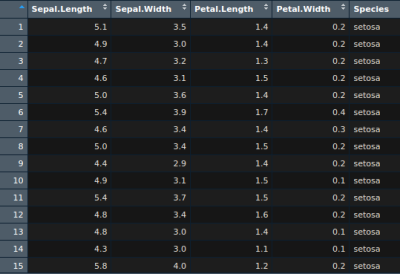

Von Daten zur Publikation
Verständlich. Robust. Reproduzierbar.
Steinlach Data Science and Consulting UG unterstützt Forschungsprojekte von der statistischen Planung über die Datenanalyse bis zur klaren Darstellung der Ergebnisse in Tabellen, Abbildungen und Manuskripttexten.
Leistungen
Methodisch saubere Auswertungen mit Fokus auf klinische und wissenschaftliche Relevanz.
Statistische Analyse
Deskriptive Statistik, Gruppenvergleiche, Regressionsmodelle, Überlebenszeitanalysen und Sensitivitätsanalysen.
Visualisierung
Publikationsfähige Tabellen und Abbildungen zur verständlichen Kommunikation komplexer Ergebnisse.
Manuskript-Support
Methoden- und Ergebnistexte, Reviewer-Responses und strukturierte Dokumentation der Analyseentscheidungen.
Beispielhafte Analyseformen
Von klassischen Modellen bis zu erklärbarer Machine Learning Analyse.




Dr. Dr. med. Mihaly Sulyok, MD PhD
Gründer und Geschäftsführer
Steinlach Data Science and Consulting UG verbindet medizinisches Verständnis, wissenschaftliche Erfahrung und datenanalytische Methodenkompetenz. Ziel ist eine Brücke zwischen klinischer Fragestellung, anspruchsvoller Statistik und klarer wissenschaftlicher Kommunikation.
Kontakt
Steinlach Data Science and Consulting UG (haftungsbeschränkt)
Bildgartenstr. 4
72147 Nehren
Deutschland
E-Mail: data@steinlachdatascience.de
E-Mail schreiben